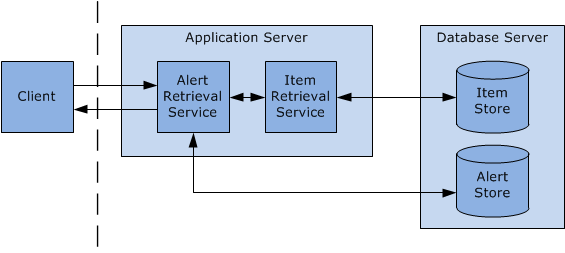

|
|||||||||||
| PREV PACKAGE NEXT PACKAGE | FRAMES NO FRAMES | ||||||||||
See:
Description
| Interface Summary | |
|---|---|
| IAlertRetrievalService | A method for retrieving Alerts from alert feeds that a user has
subscribed to. |
The Intelligence Analysis Platform alert retrieval service provides clients
with the ability to retrieve the alerts generated by alert
feeds.
Calls to methods in this service must include a SOAP
header containing an element named <ApolloMetadata> with an
attribute named TimeZone. The value of the TimeZone
attribute indicates the time zone that the client requires dates and times to
be sent and displayed in.

The alert retrieval service has a single method for retrieving alerts, subject to a number of constraints.
| Web method | Description |
|---|---|
RetrieveAlerts |
Retrieves alerts from the Intelligence Analysis Platform according to criteria including the alert feeds that generated them, and the time since alerts from the same feeds were last retrieved. |
The alert retrieval service is closely related to the alert feed retrieval service.
|
|||||||||||
| PREV PACKAGE NEXT PACKAGE | FRAMES NO FRAMES | ||||||||||